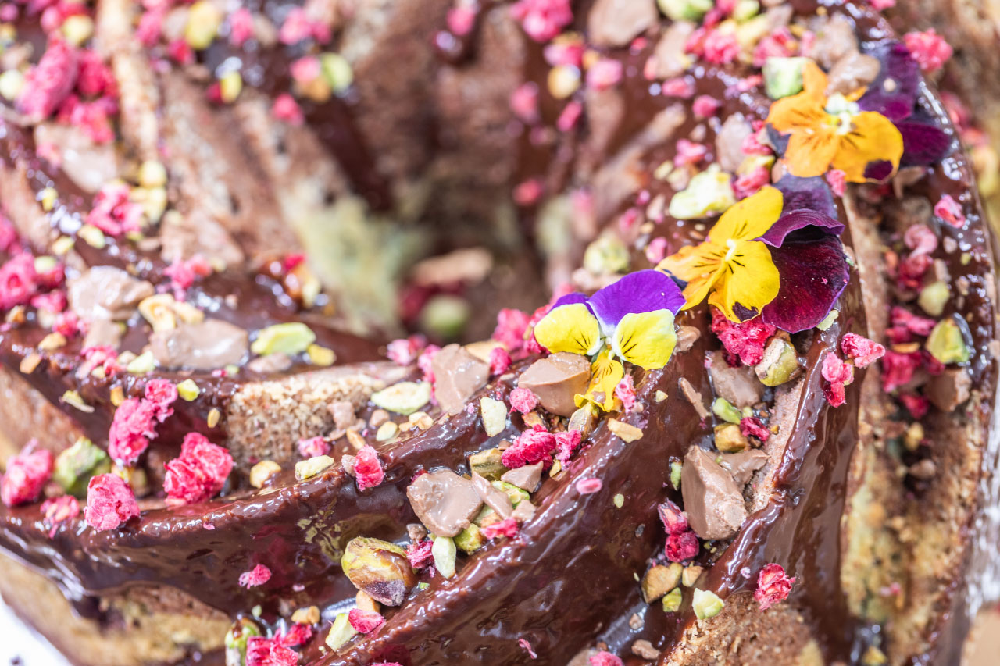
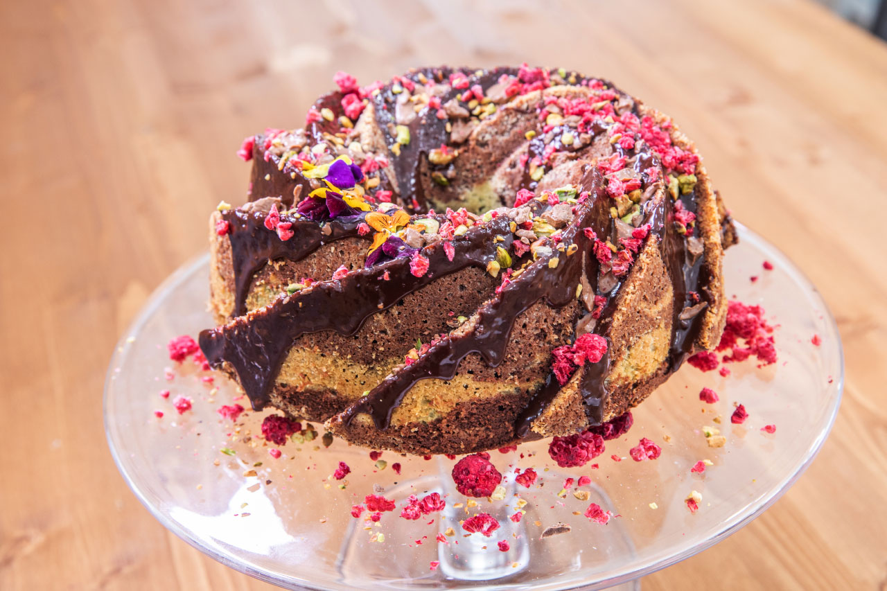
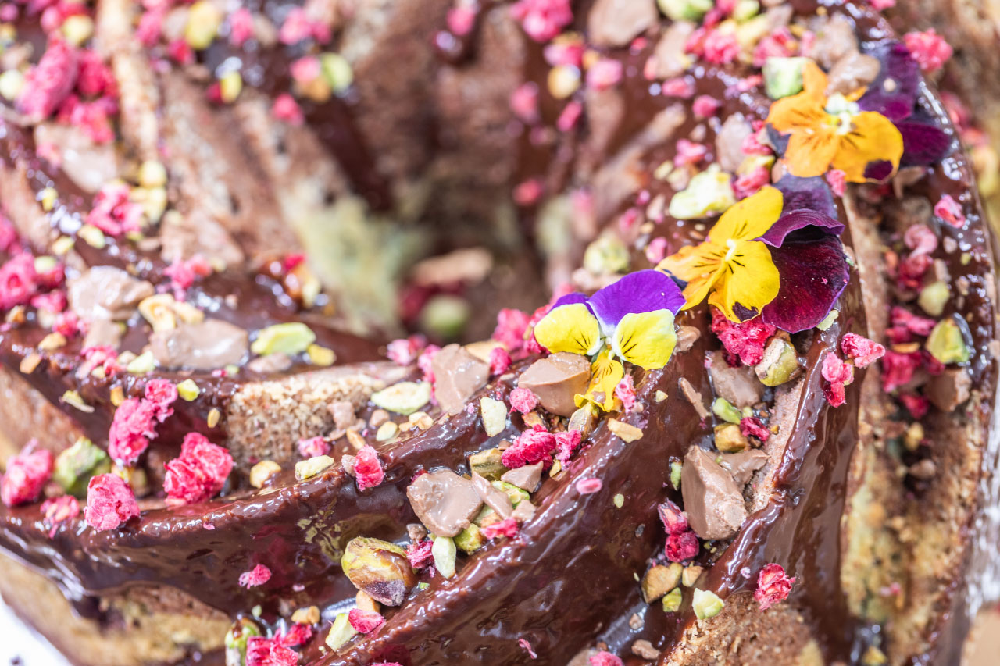
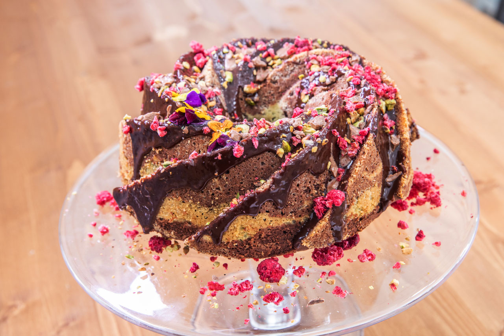

„Bábovky mě fascinovaly od dětství. První, co jsem v životě upekl, byla právě šlehačková bábovka a to už někdy ve 2. třídě. Postupem času jsem sesbíral více a více receptů, které sem propojil. Po vytunění receptu jsem začal řešit tvar samotné bábovky, bohužel po babičce nemám keramickou formu. Nakonec jsem objevil formu, kterou miluji, a věřím, že se stane rodinným dědictvím pro další generace.”
Těsto
máslo a kokos na vysypání formy
6 vajec
280 g másla
280 g moučkového cukru
250 ml smetany ke šlehání 33%
360 g polohrubé mouky
1 sáček vanilinového cukru
100 g sekaných nesolených pistácií
1 sáček prášku do pečiva bez fosfátů
150 g mléčné čokolády
30 g kakaa
2 ks pistáciového pudinku
Poleva
150 g cukru krupice
75 g změklého másla
150 g smetany ke šlehání 33%
150 g čokolády minimum kakaa 65%
Zdobení
maliny sušené mrazem
sekané nesolené pistácie
Velkou bábovkovou formu vymažeme a vysypeme, troubu předehřejeme na 180/160 stupňů. Ve větší misce smícháme máslo s polovinou cukru a utřeme doběla. Za stálého míchání elektrickým šlehačem přidáváme žloutky, pak snížíme rychlost a přilijeme smetanu. Krátce prošleháme. Mezitím opražíme pistácie na suché pánvi.
V jiné misce vyšleháme do tuha bílky se zbytkem cukru a vanilinovým cukrem. Zhruba polovinu sněhu smícháme s máslovo-vaječnou hmotou, přisypeme mouku prosátou s kypřicím práškem, promícháme a pak zlehka přidáme zbytek bílků.
Těsto rozdělíme na dvě poloviny. Do jedné poloviny přidáme prosáté kakao. Do druhé poloviny zamícháme pistáciový pudink a opražené pistácie. Do formy lijeme tak, aby střed byl zelený. Pečeme asi 40 minut přikryté alobalem, poté ještě asi 15 minut bez alobalu.
Čokoládovo-karamelovou polevu připravíme na nepřilnavé pánvi, zkaramelizujeme cukr do pěny, přidáme kousky másla a nakonec nalijeme smetanu. Krátce promícháme a odstavíme z plotny. Vzniklým karamelem zalijeme kousky čokolády a vymícháme do hladké hmoty.
Bábovku zalijeme čokoládovým krémem, ozdobíme sekanými pistáciemi a sušenými malinami.
 
